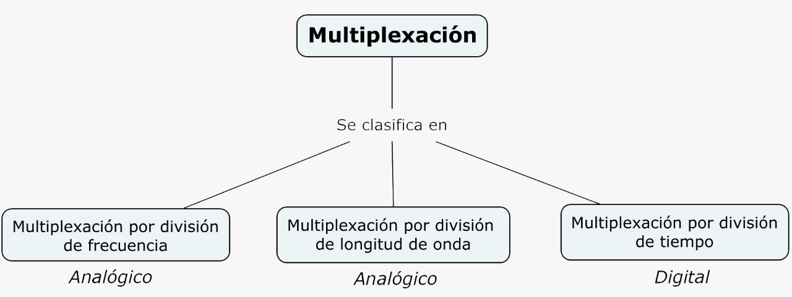

A medida que se incrementa el uso de datos en las telecomunicaciones se incrementa también el trafico, con lo cual surge la necesidad de implementar técnicas para realizar múltiples comunicaciones utilizando un ancho de banda. Teniendo en cuenta que la tecnología actual nos provee un ancho de banda mucho mayor a las necesidades medias de una señal, aprovechar el ancho de banda sobrante es crucial debido a que este es uno de los recursos mas preciados en la comunicación de datos.
Figura 1. Categorías de multiplexación.
